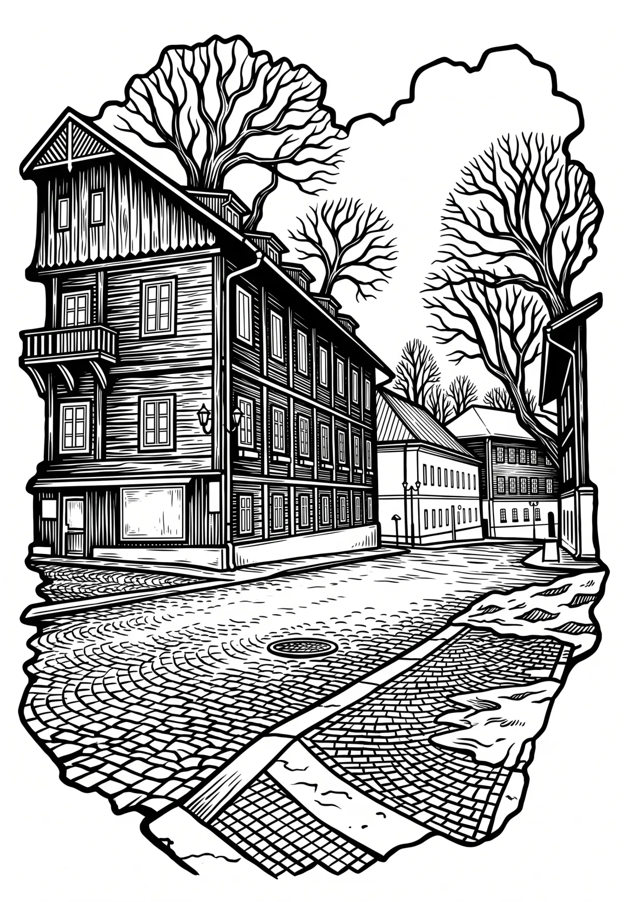

Karlova Studánka
Karlova Studánka (německy Karlsbrunn nebo Bad Karlsbrunn) je lázeňská obec ležící ve slezské části Moravskoslezského kraje v okrese Bruntál, která současně byla vyhlášena vesnickou památkovou zónou. Žije zde 172 obyvatel, se svou nadmořskou výškou 800 m n. m. je nejvýše položenou obcí bruntálského okresu.
Více na Wikipedii